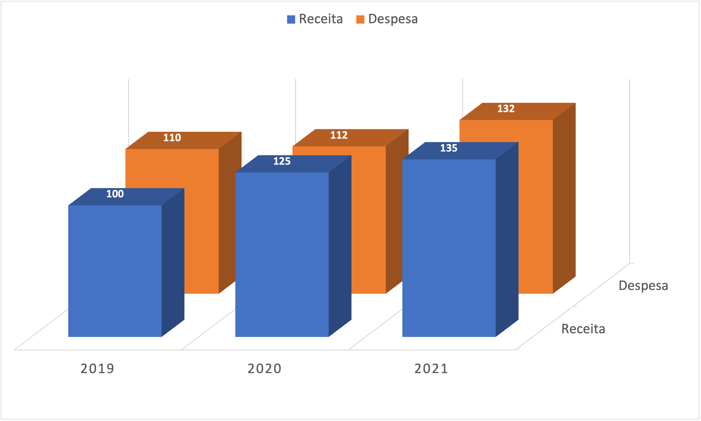

| Número de parceiros sexuais do sexo oposto entre 35-44 anos | ||
| Número reportado de parceiros sexuais ao longo da vida | Homens de 35-44 anos | Mulheres de 35-44 anos |
|---|---|---|
| Média | 14,3 | 8,5 |
| Mediana | 8 | 5 |
| Moda | 1 | 1 |
| Amplitude | 0 a 500 | 0 a 500 |
| Intervalo interquartil | 4 a 18 | 3 a 10 |
| Desvio-padrão | 24,2 | 19,7 |
| Fonte: Natsal-3 / (Spiegehalter, 2022). | ||
Auditoria baseada em dados
e os desafios do Auditor de Controle Externo moderno.
ACE Weverton Lisboa de Sena
maio - 2024
- Introdução
- O que são dados?
- Na era da abundância de dados;
- O que são dados de qualidade?
- Caso I: Natsal-3
- Quais os desafios para o Auditor de Controle Externo moderno?
- Caso II: Censo CNJ 2023
- IA: estamos ultrapassados?
- Uma mensagem
- Fim
Introdução
Inuítes polares - 1820
O que são dados?
Sem dados, você é apenas mais uma pessoa com uma opinião. - William Edwards Deming
De forma simples, dados são qualquer unidade de informação. É o subproduto de toda e qualquer ação, permeando todas as partes de nossas vidas, não apenas na esfera da internet, mas também na história, lugar e cultura. […] Digamos que, nessa definição, dados são uma unidade de informação, o passado tangível. Isso é bastante profundo quando você pensa sobre isso. Os dados são o passado e o passado são os dados. (Eremenko, 2018)
Dados vs. Informação
Apesar de serem frequentemente utilizados como sinônimos, informação e dados possuem conceitos diferentes.
Em linhas gerais, a informação é derivada do conhecimento e o dado é a informação codificada. (Gutman e Goldmeier, 2021)
Dica
A temperatura em Salvador é de 32º C. (Dado)
Faz 32º C em Salvador, o dia mais quente de janeiro de 2024. (Informação)
Na era da abundância de dados
Lei de Moore
Custo de armazenamento
O IDC’s Global DataSphere1 projeta que em 2026 os dados alcançarão 221.000 Exabytes2, sendo mais de 90% desse volume composto por dados não estruturados. Essa informação é de 2022.
Nota
Esse número corresponde a 110,5 vezes o volume gerado em 2010. Em 2018, em artigo publicado na Forbes, estimou-se que 90% dos dados do mundo foram criados apenas nos últimos dois anos.
Tudo ficou mais fácil?
O desafio do mundo atual não é a falta de informação, mas nosso julgamento para utilizá-la. (Frank, Magnone e Netzer, 2022)
O que são dados de qualidade?
- relevante;
- tempestivo;
- acurado;
- limpo;
- sem viés;
- confiável.
Nota
A estimativa da IBM (em 2016) para o custo anual de dados de baixa qualidade é de US$ 3,1 trilhões por ano apenas nos Estados Unidos. (Redman, 2016)
Caso I: Natsal-3
The National Surveys of Sexual Attitudes and Lifestyles1
Pesquisa Nacional de Estudos Sexuais e Estilo de Vida
Dados sobre a Natsal-3
Natsal-3 envolveu uma amostra de probabilidade de 15.162 adultos com idades entre 16 e 74 anos que foram entrevistados entre 2010 e 2012;
Custou cerca de 7 milhões de libras
Em termos relativos, os homens reportaram cerca de 60% de parceiras a mais do que as mulheres, tanto para a média, quanto para a mediana (Spiegelhalter, 2022)
Algumas hipóteses para os resultados
- Os homens se relacionaram com parceiras mais jovens;
- Os homens são mais propensos a exagerar o número de parceiras e as mulheres tendem a subestimá-los;
- A aparente existência de diferenças sistemáticas na forma de reportar o histórico (talvez as mulheres contabilizem seus parceiros de forma diferente ao ponto de não incluírem parceiros que preferem esquecer);
- A existência do “viés de aceitabilidade social”;
Transformar experiências em dados não é um processo direto, e os dados são inevitavelmente limitados em sua capacidade de descrever o mundo. (Spiegelhalter, 2022)
Quais os desafios para o Auditor de Controle Externo moderno?
Alguns dos desafios
- Ser alfabetizado em dados;
- Impulsionar a inovação e zelar pela qualidade dos dados;
- Promover uma cultura de dados;
- Combater a desinformação.
Os Tribunais de Contas são organizações legadas que não foram concebidas para serem orientadas a dados.
Alfabetização de dados
Alfabetização de dados é a capacidade de ler, trabalhar, analisar e se comunicar com dados. (Morrow, 2021)
..quero desmistificar dois mitos comuns. O primeiro é a visão de que você precisa ser um sábio da matemática para tomar decisões com dados, o que impede muitas pessoas de usar dados para a tomada de decisões. Esta é uma crença errônea. A realidade é que tomar decisões com dados não é uma escolha mais, é uma necessidade.
[…]
O segundo mito é a ilusão de que, com a abundância de Big Data que nos cercam, podemos finalmente chegar ao nirvana de tomar certas decisões — a decisão perfeita. (Frank, Magnone e Netzer, 2022)
Podemos ficar cegos para o óbvio, e também somos cegos para a nossa própria cegueira. (Kahneman, 2012)
Problema apresentado no 6º CONACON
Em um município do Estado da Paraíba, 6.000 pessoas foram infectadas por uma variante mortal do Cordyceps. Um grupo de cientistas concluiu por duas possibilidades de tratamento para essas pessoas. Como sendo a autoridade responsável pela tomada de decisão, você foi informado das consequências de cada uma das opções, com dados precisos, ou seja, sem margem de erro.
Tome a decisão com base no que foi reportado. Vidas estão em jogo e você não tem muito tempo!
Possibilidades apresentadas
A1 - Se o Tratamento A for adotado, 2.000 pessoas serão salvas; (84%)
B1 - Se o Tratamento B for adotado, há uma probabilidade um terço de que 6.000 pessoas serão salvas e uma probabilidade de dois terços de que ninguém será salvo. (16%)
A2 - Se o Tratamento A for adotado, 4.000 pessoas morrerão; (12%)
B2 - Se o tratamento B for adotado, há uma probabilidade de um terço de que ninguém morrerá e uma probabilidade de dois terços de que 6.000 pessoas vão morrer. (88%)
Mais informações
Experimento apresentado em The Framing of Decisions and the Psychology of Choice (Tversky e Kahneman, 1981)
[…] uma limitação desconcertante de nossa mente: nossa confiança excessiva no que acreditamos saber, e nossa aparente incapacidade de admitir a verdadeira extensão da nossa ignorância e a incerteza do mundo em que vivemos. (Kahneman, 2012)
Comunicar com dados: sabemos?
Além de coletar dados e torná-los apresentáveis, essa habilidade trata de explicar esses dados para não especialistas de uma maneira compreensível. Muitas vezes, isso significa entender tópicos de dados mais avançados. (Cabtree e Nehme, 2023)
Somos mal preparados para uma importante tarefa, cada vez mais exigida. A tecnologia permitiu acumular volumes de dados cada vez maiores e há também um crescente desejo associado de entendê-los. […] Há uma história em seus dados. Mas suas ferramentas não sabem qual é essa história. É aí que você entra. (Knaflic, 2018)
Fuja do 3D e dos gráficos de pizza!
Não use 3D! Não serve absolutamente para nada e pode prejudicar muito, como vemos aqui, pois distorce a percepção visual dos números. (Knaflic, 2018)

Qualidade dos dados e ausência de confiança

Devemos combater a desinformação
Os mal-informados são muito mais perigosos do que os não informados; a má informação é pegajosa. (Anderson, 2015)
Caso II: Censo CNJ 2023
O que diz o texto da pesquisa
Na página 44 do documento disponibilizado pelo CNJ, há o seguinte trecho.
A Figura 28 apresenta dados relativos à concordância ou discordância dos(as) magistrados sobre a afirmação: “Considero que minha remuneração é adequada ao trabalho que executo”. Tanto nas respostas dos(as) magistrados(as) quanto nas dos(as) servidores(as), que serão abordadas na próxima seção, essa é uma das afirmações que gerou mais discordância.
Os juízes estão satisfeitos com suas remunerações?
E em relação aos servidores?
De maneira geral, no âmbito do Poder Judiciário, 73,9% dos(as) magistrados(as) discordaram ou discordaram completamente da afirmação, em contraste com os 26,1% que concordaram ou concordaram totalmente com a adequação entre a remuneração e o trabalho realizado. Esse percentual de discordância é consideravelmente superior em comparação com as respostas dos(as) servidores(as) à mesma pergunta, na qual 54,2% indicaram concordar totalmente ou concordar simplesmente com a afirmação, enquanto 45,8% apontaram discordância em relação à adequação da remuneração às tarefas desempenhadas (Figura 99).
A pergunta foi a mesma?
Conforme Figura 99, foi perguntado aos(às) servidores(as) se concordavam ou discordavam da seguinte frase: “Considero que minha remuneração é adequada às minhas atribuições”. Essa é uma das afirmações que mais tiveram discordância, ainda que os percentuais de concordância tenham sido mais elevados.
Notícia no O Globo
Notícia no O Globo
Uma pesquisa realizada pelo Conselho Nacional de Justiça (CNJ) aponta que 73,9% dos magistrados do país consideram que recebem remuneração abaixo da adequada. O 2º Censo do Poder Judiciário, cujo relatório parcial foi publicado no site do órgão nesta terça-feira, indica ainda que quatro em cada cinco juízes ou desembargadores brasileiros acreditam que têm um volume de trabalho maior do que o ideal.
Notícia no Estadão
Os juízes de Direito brasileiros estão estressados e ansiosos, trabalham demais e sentem que seus salários não são suficientes. É o que mostra o relatório parcial do 2º Censo do Poder Judiciário do Conselho Nacional de Justiça (CNJ), divulgado nesta terça-feira, 19, elaborado a partir das respostas de 6,1 mil magistrados do País. O subsídio mais baixo de um juiz federal hoje é de R$ 33 mil, equivalente a 25 salários mínimos.
Olhando um pouco mais os dados
A página 12 do trabalho traz o seguinte texto:
Sendo assim, traçando um paralelo com a atualização do censo, apesar de terem sido empreendidos diversos esforços de promoção e estímulo à participação por parte do CNJ, até 30 de junho de 2023, data-base para a construção deste relatório, somente 23% dos(as) servidores(as) e 34% dos(as) juízes(as) efetivamente já tinham contribuído com a pesquisa.
Como resultado, não é viável categorizá-la como um censo, uma vez que não engloba a totalidade do grupo-alvo. No entanto, o novo levantamento apresentado neste relatório é uma pesquisa robusta, com informações sobre o perfil de magistrados(as) e servidores(as) de todos os tribunais e conselhos que compõem o Judiciário.
A fé exagerada em amostragens pequenas é apenas um exemplo de uma ilusão mais geral - prestamos mais atenção ao conteúdo das mensagens do que à informação sobre sua confiabilidade, e como resultado terminamos com uma visão do mundo em torno de nós que é mais simples e mais coerente do que os dados justificam (Kahneman, 2012)
_Nem todas as informações estatísticas que você vai encontrar podem ser testadas com a segurança de uma análise química ou a precisão de um laboratório de testes. No entanto, é possível provocar o assunto com cinco1 perguntas básicas e, ao encontrar as respostas, evitar aprender um monte de coisas que não são verdadeiras. (Huff, 2016)
IA: estamos ultrapassados?
IA não é um conceito novo. Na verdade, as suas raízes remontam a várias décadas. Mas a sua adoção generalizada e o seu crescimento exponencial só foram sentidos nos últimos 10-15 anos devido à convergência de três vetores de crescimento: avanços algorítmicos, poder computacional e explosão de dados. (Espindola e Wright, 2021)
VASA-1
Estamos chegando ao fim…
Bombardeios em Londres - 1940
Coragem não é algo que você já tem e o torna destemido quando tempos difíceis começam. Coragem é o que você conquista quando passou por tempos difíceis e descobriu que não são tão difíceis assim. (Gladwell, 2014)
Muito obrigado!
wsena@tce.pb.gov.br
Weverton Lisboa de Sena
Referências
ANDERSON, C. Creating a data-driven organization: Practical advice from the trenches. 1. ed. ed. [s.l.] O’Reilly Media, Inc., 2015.
BEAN, R. Fail fast, learn faster : lessons in data-driven leadership in an age of disruption, big data, and AI. Hoboken, New Jersey: John Wiley & Sons, Incorporated, 2021.
BRUCE, A.; BRUCE, P. Estatı́stica prática para cientistas de dados. Rio de Janeiro: Alta Books, 2019.
CABTREE, M.; NEHME, A. What is Data Literacy? A Comprehensive Guide for Organizations. Disponível em: <https://www.datacamp.com/blog/what-is-data-literacy-a-comprehensive-guide-for-organizations>. Acesso em: 8 jul. 2023.
DAVIES, R.; LOCKE, S.; D’AGOSTINO MCGOWAN, L. datasauRus: Datasets from the Datasaurus Dozen. [s.l: s.n.].
EREMENKO, K. Confident Data Skills: Master the Fundamentals of Working with Data and Supercharge Your Career. [s.l.] Kogan Page Publishers, 2018.
ESPINDOLA, D.; WRIGHT, M. W. The Exponential Era: Strategies to Stay Ahead of the Curve in an Era of Chaotic Changes and Disruptive Forces. Hoboken, New Jersey: John Wiley & Sons, Incorporated, 2021.
FRANK, C. J.; MAGNONE, P. F.; NETZER, O. Decisions Over Decimals: Striking the Balance Between Intuition and Information. Hoboken, New Jersey: John Wiley & Sons, 2022.
GALOR, O. A Jornada da Humanidade: as origens da riqueza e da desigualdade. 1. ed. ed. Rio de Janeiro: Intrínseca, 2022.
GLADWELL, M. Davi e Golias: a arte de enfrentar gigantes. [s.l.] Sextante, 2014.
___. Blink: a desisão num piscar de olhos. Rio de Janeiro, RJ: Sextante, 2016.
GLASS, R.; CALLAHAN, S. The Big Data-driven business: How to use big data to win customers, beat competitors, and boost profits. [s.l.] John Wiley & Sons, 2014.
GUTMAN, A. J.; GOLDMEIER, J. Becoming a data head: How to think, speak, and understand data science, statistics, and machine learning. Hoboken, NJ: John Wiley & Sons, 2021.
HUFF, D. Como mentir com estatı́stica. Rio de Janeiro - RJ: Editora Intrinseca, 2016.
KAHNEMAN, D. Rápido e devagar: duas formas de pensar. 1 ed. ed. Rio de Janeiro, RJ: Objetiva, 2012.
KAHNEMAN, D.; SIBONY, O.; SUNSTEIN, C. R. Noise: a flaw in human judgment. London: UK: HarperCollins Publishers, 2021.
KNAFLIC, C. N. Storytelling com dados: um guia sobre visualização de dados para profissionais de negócios. Rio de Janeiro: RJ: Alta Books, 2018.
MORROW, J. Be data literate: The data literacy skills everyone needs to succeed. [s.l.] Kogan Page Publishers, 2021.
REDMAN, T. C. Bad Data Costs the U.S. $ 3 Trillion Per Year. Disponível em: <https://hbr.org/2016/09/bad-data-costs-the-u-s-3-trillion-per-year>. Acesso em: 10 jul. 2023.
RIBEIRO, F. G. DE M. M. Value creation and barriers in the commercial use of open government data. Porto, Portugal: Universidade do Porto, 2017.
SILBERZAHN, R. et al. Many analysts, one data set: Making transparent how variations in analytic choices affect results. Advances in Methods and Practices in Psychological Science, v. 1, n. 3, p. 337–356, 2018.
SPIEGELHALTER, D. A arte da estatística: como aprender a partir de dados. Rio de Janeiro, RJ: Zahar, 2022.
SUSSKIND, R. E.; SUSSKIND, D. The future of the professions: How technology will transform the work of human experts. New York: Oxford University Press, USA, 2015.
TVERSKY, A.; KAHNEMAN, D. The framing of decisions and the psychology of choice. science, v. 211, n. 4481, p. 453–458, 1981.
WICKHAM, H.; ÇETINKAYA-RUNDEL, M.; GROLEMUND, G. R for data science. [s.l.] O’Reilly Media, Inc., 2023.
Dia do Auditor de Controle Externo - 2024 - Salvador/BA